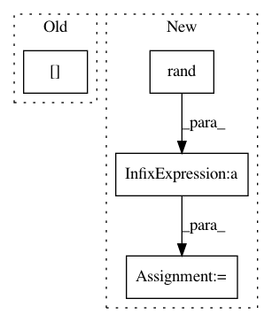

4a45e9ae54615c9da540039ae59da6b4fce941a1,test/geometry/test_homography.py,TestFindHomographyDLTIter,test_dirty_points_and_gradcheck,#TestFindHomographyDLTIter#,132
Before Change
def test_dirty_points_and_gradcheck(self, batch_size, device):
// generate input data
dtype = torch.float64
H = (torch.eye(3, device=device)[None].repeat(batch_size, 1, 1) +
0.3 * torch.rand(batch_size, 3, 3, device=device))
H = H / H[:, 2:3, 2:3]
After Change
@pytest.mark.parametrize("batch_size", [1, 2])
def test_dirty_points_and_gradcheck(self, batch_size, device, dtype):
// generate input data
points_src = torch.rand(batch_size, 10, 2, device=device, dtype=dtype)
H = kornia.eye_like(3, points_src)
H = H * 0.3 * torch.rand_like(H)
H = H / H[:, 2:3, 2:3]
points_src = 100. * torch.rand(batch_size, 20, 2, device=device, dtype=dtype)
points_dst = kornia.transform_points(H, points_src)
In pattern: SUPERPATTERN
Frequency: 3
Non-data size: 4
Instances
Project Name: arraiy/torchgeometry
Commit Name: 4a45e9ae54615c9da540039ae59da6b4fce941a1
Time: 2020-11-25
Author: edgar.riba@gmail.com
File Name: test/geometry/test_homography.py
Class Name: TestFindHomographyDLTIter
Method Name: test_dirty_points_and_gradcheck
Project Name: ncullen93/torchsample
Commit Name: a7d92f7020dfe8854430ef13ed2923b2606a6262
Time: 2017-05-11
Author: ncullen.th@dartmouth.edu
File Name: torchsample/utils.py
Class Name:
Method Name: th_random_choice
Project Name: luispedro/mahotas
Commit Name: 93663c2cc8c0c8bc3c6f28c27679707305948c80
Time: 2010-05-11
Author: lpc@cmu.edu
File Name: tests/test_texture.py
Class Name:
Method Name: test_cooccurence